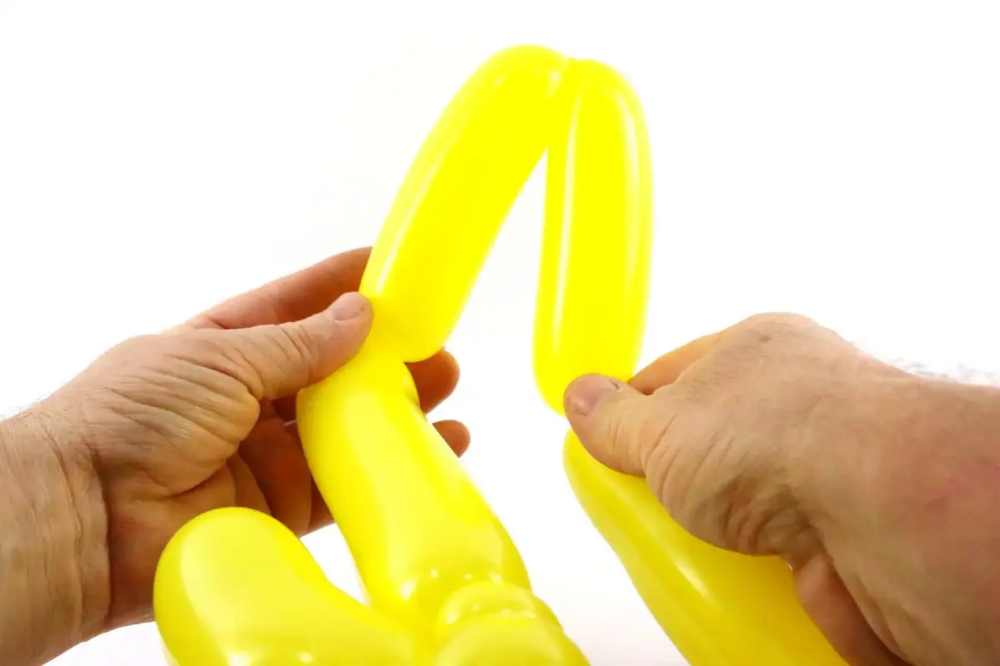
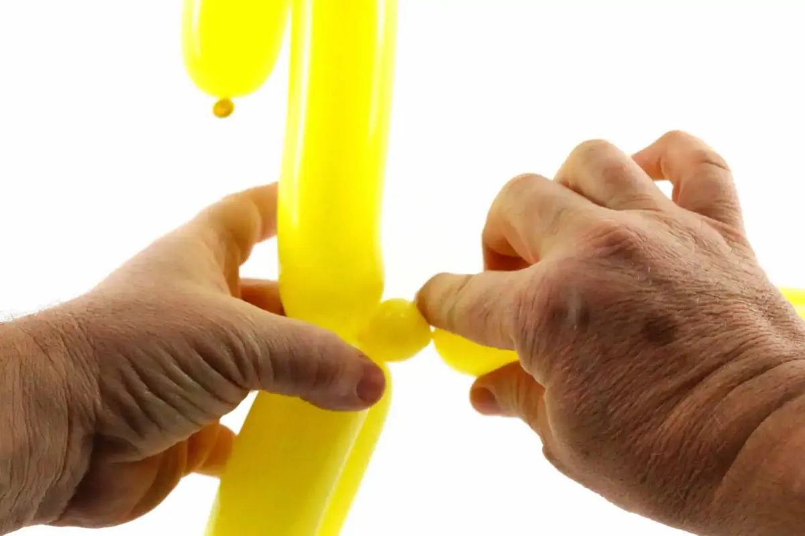
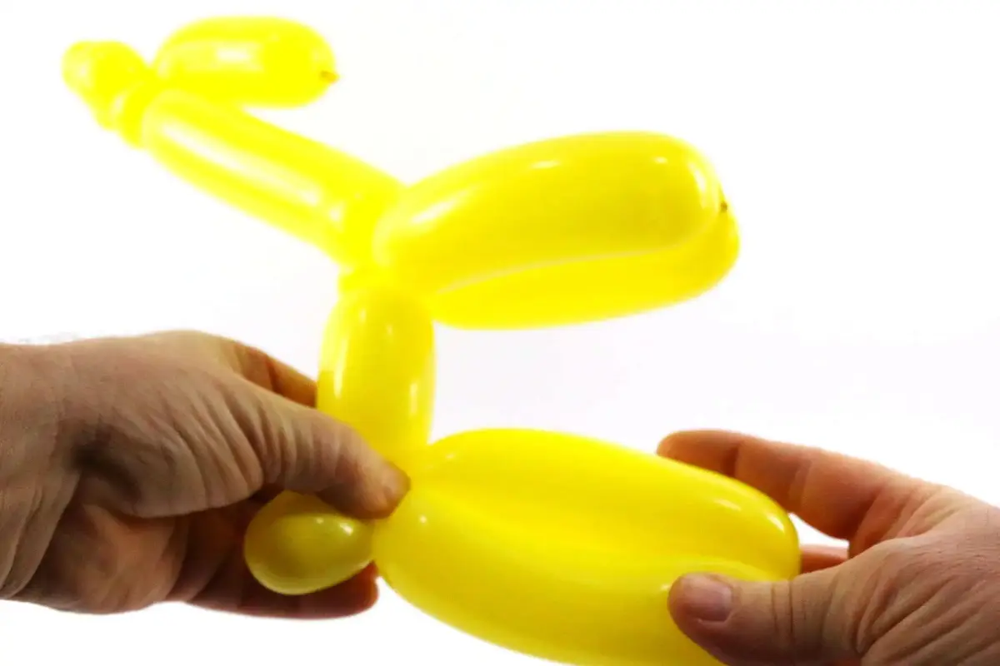

Aquí tenemos otro modelo sencillo para principiantes: la jirafa con solo 1 globo.
Este modelo es un buen ejercicio de aplicación de la burbuja-oreja como manera de bloqueo y de solidificación. También introduce el concepto de burbujas excéntricas, una sencilla asociación de dos técnicas juntas: la confección de burbujas y de ángulos, para obtener formas un poco más variadas y sutiles, y mucho más naturales.
1- Inflar un globo dejando una margen de aproximadamente 5 dedos.2- Agarrar el nudo del globo.3- Tirar en el nudo a fin de liberar una longitud suplementaria de látex.4- Apretar en el globo,5- a fin de hacer refluir el aire hacia el nudo y rellenar la pequeña longitud de látex que acaba de liberarse.6- Efectuar un primero control de la presión del aire.7- Doblar el globo a cerca de 3 dedos del nudo. 8- Hacer un angulo agudo al nivel de este doblez.9- Una vez el angulo formado, cerrar la burbuja justo encima.10- La idea, es de obtener una burbuja excéntrica.11- Luego hacer 4 burbujas a seguir. La primera y la cuarta serán mas amplios que la segunda ya la tercera.12- Bloquear la serie de 4 burbujas al nivel de su base.13- Luego hacer una pequeña burbuja,14- y convertir esta pequeña burbuja en burbuja-oreja,15- a fin de bien asegurar y bloquear junto la cabeza, las cuernas y el cuello de la jirafa.16- Dividir el segmento quedando del globo en 3 partes mas o menos iguales, justo para situar el tercero (es el primero tercero que nos interesa de verdad).17- Hacer un angulo agudo al nivel del primero doblez (a un tercero del globo que queda).18- Deberías obtener esta forma.19- Cerrar la burbuja justo debajo del angulo.20- La idea, una vez más, es de obtener una burbuja excéntrica (lo que nos permitirá dirigir el cuello fácilmente y naturalmente hacia arriba)21- Hacer una nueva burbuja de aproximadamente una cuarta parte del tamaño del segmento de globo quedando, luego una segunda burbuja, del mismo tamaño, justo después de la primera.22- Luego una pequeña burbuja,23- que sera convertida en una burbuja oreja, con el fin de reforzar la articulación cuello/patas delanteras.24- Efectuar un ultimo control de la presión del aire de manera que no queda ninguna margen en el segmento de globo que queda.25- Dividir el segmento de globo quedando en dos, la ultima parte debería ser la mas corte. Luego hacer presión en estas dos grandes burbujas juntas, para formar un doblez un poquito antes de la extremidad de la ultima burbuja.26- Girar las dos burbujas juntas en la base de este doblez.27- De esta manera se obtiene, en un movimiento, las dos patas traseras de la jirafa, su rabo y su barriga. 28- Acentuar el redondeado de la barriga de la jirafa.29- Unos plumazos para la cara y las manchas… ¡ya esta! Hasta pronto! Para otra lección… con Môssieur Ballon !